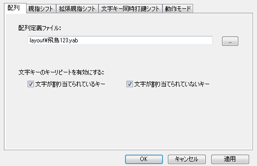
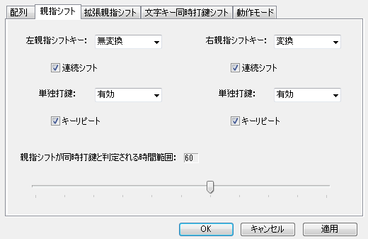
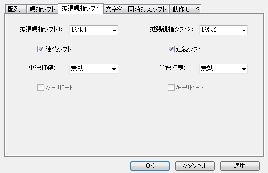
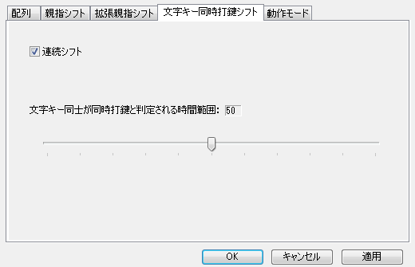
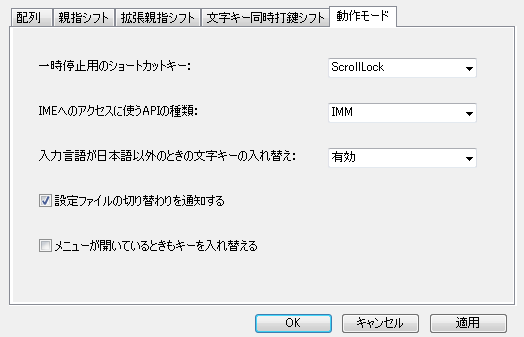

設定ダイアログ
適用・OKボタン
適用ボタンやOKボタンを押すと、ダイアログの内容が反映されるとともに、設定ファイルにも保存されます。配列定義ファイルが実際に読み込まれるのも、適用ボタンやOKボタンを押したときです。
読み込むことができる設定ファイルの文字コードは、ユニコードとシフトJISです。やまぶきRが設定ファイルを保存するときは、ユニコードで保存します。
拡張子が「ypr」のファイルが設定ファイルになります。
・配列

配列定義ファイル
右の「...」ボタンを押すと、「ファイルを開く」ダイアログが開いて、選択できます。
実行ファイルがあるディレクトリ以下のファイルは相対パスで保持されます。それ以外のファイルは絶対パスで保持されます。
文字キーのキーリピートを有効にする
文字キーのキーリピートが邪魔なときは、オフにしてください。
「文字が割り当てられているキー」は、かな、モディファイア無し英数記号、文字直接入力が割り当てられているキーについての設定です。
「文字が割り当てられていないキー」は、それ以外のキーについての設定です。
・親指シフト

親指シフトキー
親指シフトキーとして使うキーを選択してください。
「拡張1」などは、機能キー入れ替えで指定した上で使用してください。
連続シフト
オンにすると、シフトの効力が親指シフトキーを押し続けている限り続きます。
オフにすると、シフトの効力が最初の一打だけになります。
単独打鍵
親指シフトキーを単独打鍵したときに、キー入力をするかどうかについてです。親指シフトキーの単独打鍵時のキー入力が邪魔だと感じたら「無効」にしてください。
「前置シフト」を選ぶと、親指シフトキーを単独打鍵した後の次の打鍵にシフトがかかるようになります。
「Spaceキー」を選ぶと、単独打鍵時にSpaceキーを入力します。タイピングゲーム用です。
キーリピート
親指シフトキーの単独打鍵のキーリピートが親指シフトをするときに邪魔だと感じたらオフにしてください。
親指シフトが同時打鍵と判定される時間範囲
文字キーと親指シフトキーが同時打鍵と判定される時間範囲を設定します。
詳しくは、同時打鍵時間範囲のページを見てください。
0に設定すると親指シフトキーを押している間だけシフトが掛かるようになり、さらに文字キー同時打鍵シフトが未使用の場合には、文字キーをキーダウンしたときに文字が出るようになります。
・拡張親指シフト

左右親指シフトとは別の、補助的に使う親指シフトに関する設定です。
・文字キー同時打鍵シフト

連続シフト
オンにすると、シフトの効力が文字キーを押し続けている限り続きます。
オフにすると、シフトの効力が最初の一打だけになります。
文字キー同士が同時打鍵と判定される時間範囲
文字キー同士が同時打鍵と判定される時間範囲を設定します。
・動作モード

一時停止用のショートカットキー
キーの入れ替えを一時停止するためのショートカットキーを選択します。
IMEへのアクセスに使うAPIの種類
かな入力時に英数文字を入力したりIMEのローマ字入力と英数入力を判別したりするときにIMEへアクセスするのですが、そのときに使うAPIの種類を設定します。IMMは従来のIMEへのアクセスAPI。TSFは詳細なテキストサービスと呼ばれているものです。
Microsoft IMEに対してはIMMを選択し、Windows XPをお使いのときは、さらに地域と言語のオプションで詳細なテキストサービスをオフにしてください。
ATOKとGoogle日本語入力はTSFに対応していませんので、IMMを選択してください。
入力言語が日本語以外のときの文字キーの入れ替え
IMEの入力言語が日本語以外のときに、文字キーの入れ替えをするかどうかの設定です。
「拡張親指シフトのみ有効」は、拡張親指シフトが使える代わりに一部のアプリでうまく入力できないことがあります。
「無効」は、確実に入力できますが拡張親指シフトは使えません。
設定ファイルの切り替わりを通知する
設定ファイルが切り替わったときに、それをタスクトレイアイコンのバルーンで通知するかどうかの設定です。
メニューが開いているときもキーを入れ替える
メニューが開いているときのキーの入れ替えを有効にするかどうかの設定です。